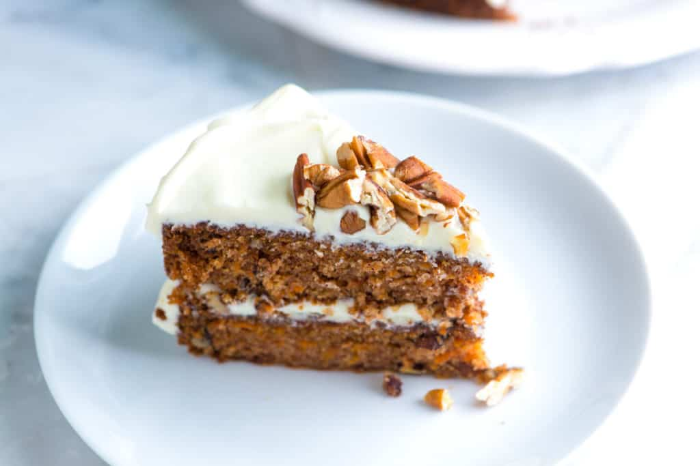

Cake

The making of a Carrot Cake!!!
This is my favorite recipe for carrot cake! It is 100% made from scratch,
easy to make, versatile, and utterly delicious. One of our most popular
recipes! Just read all the rave reviews!
Ingredients
- All-purpose flour
- Baking soda
- Salt, cinnamon, and vanilla extract
- Oil
- Sugar
- Eggs
- A whole lotta Carrot
Steps...
-
Dry ingredients in one bowl, wet ingredients in another:
I like to whisk my dry ingredients together in one bowl until they are
well blended. Then I whisk all the wet ingredients together in another
bowl.
-
Fold the dry and wet ingredients together:
Then I switch to a rubber spatula or large spoon and fold the two — wet
and dry ingredients — together until I don't see any large streaks of
flour.
-
Add carrots, nuts, and raisins: When I've got the
batter ready, I fold in the carrots, and if I'm using them, the nuts and
raisins.
-
To bake the carrot cake, divide the batter between two buttered and
floured cake pans and bake until done. The cake layers bake in the
oven for 35 to 40 minutes (they smell fantastic). After baking, let
the layers cool then frost with your favorite frosting.
Go back.